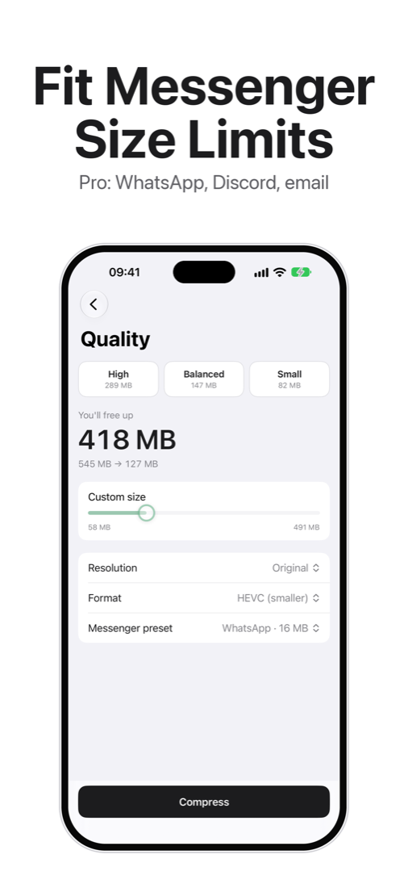

How to compress a video for WhatsApp on iPhone
WhatsApp's direct video limit is about 16 MB. Here is how to get under it.
Short answerSources agree that WhatsApp's limit for sending a video directly is about 16 MB. Compress the video to a target under 16 MB (shorter, lower resolution, or both), or send it as a document, which has a much higher limit but arrives uncompressed. Limits can change, so check WhatsApp's own help if a send fails.

Steps
- Check the size: Photos → open the video → swipe up, or look in Files.
- If it is over 16 MB, compress a copy to a target below 16 MB. Aim a little lower, for example 14 to 15 MB, so it clearly fits.
- If it is too long for that size at good quality, trim it first or split it into parts.
- Send the smaller copy in WhatsApp. If you need the original quality, send it as a document instead.
Which option when
| Situation | What to do |
|---|---|
| Short clip, a bit over 16 MB | Compress to a 16 MB target |
| Long video | Trim or split first, then compress each part |
| Need the original quality | Send as a document (higher limit, no compression) |
Related: Discord limit, email limit.
Doing this with Zipvid
Zipvid Pro has a 16 MB size preset made for this: it targets the WhatsApp-style limit so you do not have to guess settings. Results depend on the video, and a long clip may need trimming first.
FAQ
What is the WhatsApp video size limit?
Sources say about 16 MB when you send a video directly. Documents allow far larger files, but they are not re-encoded.
Why does my video look worse after WhatsApp?
WhatsApp re-encodes videos to make them smaller. Sending it as a document avoids that.
Related
- How to compress a video on iPhone
- How to compress a video for Discord on iPhone
- How to send a large video by email from iPhone
Sources
Steps and menu names can differ slightly between iOS versions. Last checked 23 Nov 2026.